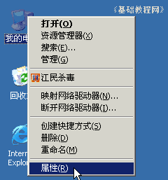
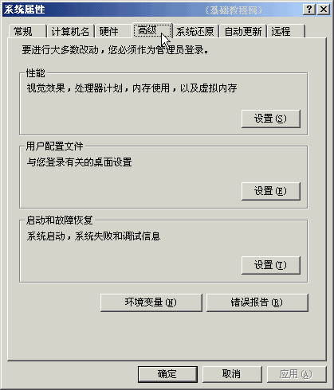
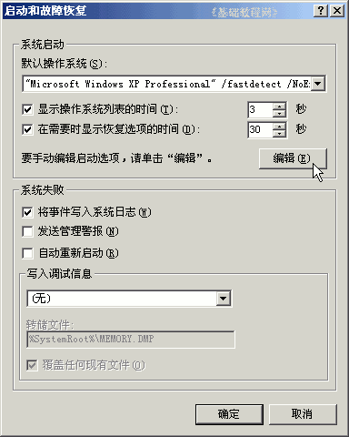
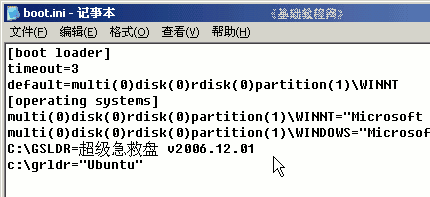
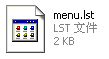
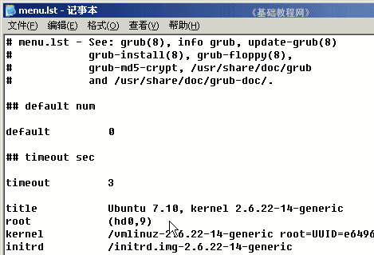
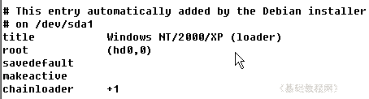

电脑操作基础
三十三、启动文件 返回
有时候一个机子里要安装好几个系统，各个系统一般都有自己的分区，开机的时候会有一个启动菜单，通过方向键选择即可，下面我们来看一个练习；
1、boot.ini启动菜单
1）在桌面找到“我的电脑”图标，瞄准点右键，选“属性”命令；

2）在出来的系统属性面板中，在上边点“高级”标签，里面有几个设置按钮；

3）在下面“启动和故障恢复”的里面，找到“设置”按钮，点击出来一个启动列表，
还有一个时间和“编辑”按钮；

4）点击“编辑”按钮出来一个记事本，里面就是机子上安装的各个系统列表；

第一行方框下面的3是时间，启动菜单显示3秒，下面一行是默认自动进入的操作系统，
第二个方框下面是各个操作系统，每个占一行，
注意不要随意修改这个文件，或者备份以后再修改，并且记住修改了哪些内容；
2、menu.lst启动配置文件
1）如果安装linux则会使用grub来引导系统，它使用的是menu.lst配置文件，一般放在启动文件夹/boot或者是C:盘根目录里；

2）可以用记事本打开这个文件，修改之前要先做好备份；

带＃号的行是说明，不起作用，下面的3是显示菜单时间3秒，
每个title是一个操作系统，默认启动第一个title里的操作系统，在上面的default那儿可以修改；
3）Windows系统一般放在后面，大致的格式是这样的；

本节学习了在WinXP中查看和编辑启动配置文件的基本方法，如果你成功地完成了练习，请继续学习下一课内容；
本教程由86团学校TeliuTe制作|著作权所有
基础教程网：http://teliute.org/
美丽的校园……
转载和引用本站内容，请保留作者和本站链接。